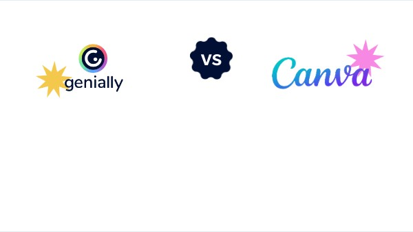
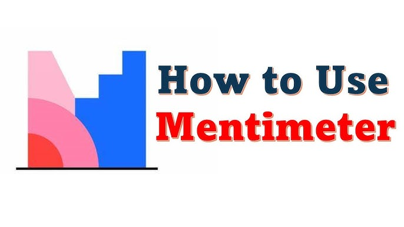

Como utilizar Canva, Mentimeter y Genially como un experto
En esta pagina exploraremos tres herramientas increibles que te ayudaran a expresarte en cualquier momento,
crear contenido visual para cada presentacion o trabajo y lograr generar un contenido mas agradable y entretenido para la audiencia.
En la actualidad, la tecnología se ha convertido en una herramienta esencial en los procesos de enseñanza y aprendizaje. Veremos como estas se desarrollaron y como
existen diversas plataformas digitales que permiten tanto a estudiantes como a maestros crear contenido atractivo, dinámico e interactivo.
Este proyecto tiene como objetivo principal demostrar cómo se pueden utilizar tres aplicaciones tecnologicas innovadoras y que nos hacen ser mas creativos:
Canva, Mentimeter y Genially, para mejorar la presentación de ideas principales, fomentar la participación y transformar los metodos de aprendizaje en algo mas claro y adaptado a los jovenes.
Te ayudare a convertirte en un experto en estas tres!!
 